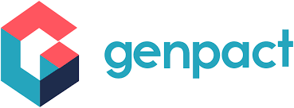

Senior Cloud & DevOps Engineer — AWS • Azure • Kubernetes • CI/CD • IaC
About Me
Senior Cloud and DevOps Engineer with 9+ years designing scalable, secure cloud infrastructure. I build resilient CI/CD pipelines, design Kubernetes platforms, and implement Infrastructure as Code with a strong focus on security and automation.
Certifications

Oracle Certified
Oracle Cloud Infrastructure - DevOps.

DevOps Multi-Cloud Architect
Certification in multi-cloud DevOps architectures.
Skills
Experience
Infrastructure & Automation Engineer — Charter Communications
- Built CI/CD pipelines and automated cloud infra using CDK and Terraform.
- Designed and operated EKS clusters and cross-account deployments.
- Implemented observability with Prometheus and Grafana.
Sr. Platform Engineer — Apple Inc.
- Created secure Azure pipelines and managed AKS platforms.
- Led platform hardening and deployment automation.
Cloud Engineer — American Express
- Automated infra with Terraform; introduced DevSecOps scans to pipelines.
Cloud Engineer — Genpact
- Collaborated on cloud migrations and platform automation (placeholder — please provide exact details from resume).
- Implemented infrastructure-as-code and CI/CD patterns for reliability and repeatability.
- Contributed to monitoring and operational runbooks to improve incident response.
Key Achievements
Embedded security tooling into CI/CD for early detection and remediation.
Led migrations and standardized patterns across AWS and Azure accounts.
Selected Projects
Intelligent Cloud Transformation Platform for Telecom Analytics and Scalable Service Delivery
Designed and implemented a cloud-native DevOps platform to modernize telecom and analytics workloads on AWS. Migrated monolithic applications into containerized microservices using Kubernetes (EKS) and Docker. Built end-to-end CI/CD pipelines using Jenkins and GitHub Actions with integrated security scans (SonarQube, Trivy). Developed Infrastructure as Code using AWS CDK and Terraform for scalable provisioning. Enabled real-time data processing and MLOps workflows using SageMaker, Kinesis, and Lambda. Implemented observability with Prometheus, Grafana, and CloudWatch for proactive monitoring. Ensured high availability and zero-downtime deployments using blue-green and canary strategies.
AI-Driven DevOps Acceleration Platform for Secure and Scalable Enterprise Applications
Engineered an enterprise DevOps platform to accelerate application delivery and improve system reliability. Built multi-stage CI/CD pipelines using Azure DevOps and GitHub Actions with integrated security and compliance gates. Deployed and managed containerized workloads on AKS using Helm and Argo Rollouts. Integrated Azure OpenAI and Machine Learning services for AI-driven automation and alert enrichment. Implemented Infrastructure as Code using Terraform and ARM templates for consistent deployments. Strengthened observability using Azure Monitor, Prometheus, and Grafana dashboards. Ensured secure access and secrets management using Azure Key Vault and RBAC policies.

Secure Cloud Governance and DevSecOps Platform for Financial Systems Modernization
Developed a secure DevSecOps platform to modernize financial systems with strong governance and compliance. Automated infrastructure provisioning using Terraform, Bicep, and Ansible for Azure-based environments. Built secure CI/CD pipelines with Azure DevOps integrating SonarQube, Fortify, and Key Vault. Implemented containerized deployments on AKS with Helm and automated rollout strategies. Integrated security tools like Defender for Cloud and Sentinel for continuous compliance monitoring. Designed observability pipelines using Azure Monitor, Grafana, and Splunk for real-time insights. Improved system resilience with self-healing automation using Azure Functions and Logic Apps.

Automated Linux Infrastructure Reliability and Security Management Platform for Enterprise Operations
Built and managed a robust Linux infrastructure platform to ensure system reliability and operational efficiency. Administered RHEL and SUSE environments with automated patching and configuration using Bash and Python scripts. Implemented monitoring solutions using Nagios and Zabbix for real-time system health tracking. Strengthened security through system hardening and compliance enforcement across environments. Streamlined incident management and troubleshooting processes following ITIL practices. Automated routine administrative tasks to reduce manual effort and improve consistency. Supported capacity planning, backup strategies, and disaster recovery for business-critical systems.